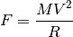

centrif – Centrifugal/Centripetel Force¶
Analysis¶
This is a Force-Mass-Velocity-Radius Solver.
The essential relationship among Force, F, Mass, M, Velocity, V, and Radius, R, seems to be this:

This program can solve for any one given the other three.
It also converts from Standard to Imperial units.
Implementation¶
hamcalc.math.centrif – Centrifugal/Centripetel Force
This is a Solver for Force-Mass-Velocity and Radius.
Solver Test Cases
>>> import hamcalc.math.centrif as centrif
>>> centrif.centrif( F=100, M=10, R=333 )
{'V': 57.706152185014034, 'R': 333, 'M': 10, 'F': 100}
>>> centrif.centrif( V=57.7, M=10, R=333 )
{'F': 99.97867867867868, 'R': 333, 'M': 10, 'V': 57.7}
>>> centrif.centrif( V=57.7, F=100, R=333 )
{'V': 57.7, 'R': 333, 'M': 10.002132586827821, 'F': 100}
>>> centrif.centrif( V=57.7, F=100, M=10 )
{'R': 332.92900000000003, 'V': 57.7, 'M': 10, 'F': 100}
Unit Conversion Test Cases
>>> m= centrif.KILOGRAM.to_std( 1 )
>>> centrif.POUND_MASS.from_std( m )
2.2046226218487757
>>> f=centrif.POUND_FORCE.to_std( 1 )
>>> centrif.NEWTON.from_std(f)
4.448222
>>> v=centrif.FT_PER_SEC.to_std(12)
>>> centrif.M_PER_SEC.from_std(v)
3.657599994440448
>>> r=centrif.FOOT.to_std( 6 )
>>> centrif.METRE.from_std( r )
1.8287999879299202
Quirks¶
The units of force and mass are wrong.
See http://en.wikipedia.org/wiki/Slug_(mass)
http://en.wikipedia.org/wiki/Pound-force
http://en.wikipedia.org/wiki/Pound_(mass)
Weight is the force of a mass accelerated by gravity: .
Force is measured in Newtons, N, or pounds, lb. The prompt and output says “kilograms”, which is not quite correct.
Mass is measured in kilograms, kg, or a number of different ways in imperial units. The output says “lbs” which is not totally correct.
One imperial unit for mass is the slug.
1 slug = 14.593903 kg based on standard gravity.
Or
We can use poundals (pdl) of force and pounds (lb) of mass.
1 pdl = 0.138254954376 N
Or
We can distinguish between Pound Mass (lb_m) and Pound Force (lb_f).
lb_m = 0.45359237 Kg
lb_f = 4.448222 N
What’s confusing here is that a scale for measuring weight can be calibrated to provide Kg of mass instead of Newtons of force because the acceleration of gravity at sea level is essentially constant.
In the imperial units, the distinction between weight and mass was not carefully defined, leading to units like poundals of fource or slugs of mass.
The velocity and radius units are correct.
Legacy Introduction¶
CENTRIFUGAL/CENTRIPETAL Force by George Murphy VE3ERP
DEFINITIONS:
CENTRIFUGAL FORCE: Force directed in a straight line away from the centre.
CENTRIPETAL FORCE: Force directed in a curve toward the centre of rotation.
In either case the force is the same.
Legacy Output¶
Note that this has a math error. The numbers are incorrect. The format and the displayed units are all that’s important.
ENTER: Force in kilograms? 100
ENTER: Mass in kilograms? 10
Velocity in metres/second?
Radius of orbit in metres? 333
Force........... 100.000 kg = 220.460 lb.
Mass............ 10.000 kg = 22.046 lb.
Velocity........ 0.173 m./sec = 0.569 ft/sec
Orbital Radius.. 333.000 m. = 1092.240 ft.